صفحه ۲۰۶
آرایهها (Arrays) متغیرهای آرایه امکان نگهداری چند عنصر با انواع دادههای مختلف را دارند. در هنگام تعریف یک متغیر از نوع آرایه، مقادیر آرایه درون علامت کروشه نوشته میشوند. یک آرایه میتواند دارای عناصری با نوع داده یکسان یا متفاوت باشد.
مثال
در مثال زیر سه آرایه با مقادیر رشتهای، عددی و ترکیبی تعریف شده است:
;]"let cars = ["Opel", "Saab", "Volvo", "BMW", "Hyundai
;]let numbers = [1, 20 , 5 , 25 , 1000 , 10 , 1 , 5
;]let data = [123, "Opel", false , 12 , 35
هر یک از عناصر آرایه دارای اندیس هستند. اندیس عناصر آرایه از صفر شروع میشود، بنابراین اگر یک آرایه دارای 5 عنصر باشد، اندیس عنصر اول صفر و اندیس عنصر آخر 4 خواهد بود. برای دسترسی به عناصر آرایه از اندیس عناصر استفاده میشود. شکل زیر نمایی از عناصر آرایه cars و مقادیر آنها را نمایش میدهد:
Volvo
Saab
Opelمقدار عناصر
BMW
0اندیس عناصر
4
3
2
1
شکل 9
برای دسترسی به عنصر اول آرایه از عبارت ]cars[0 و برای دسترسی به عنصر چهارم از عبارت ]cars[4 استفاده میشود.
مثال
در خط دوم مثال زیر مقدار عنصر سوم آرایه cars و در خط سوم کل آرایه درون کنسول نمایش داده میشود.
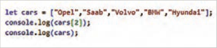
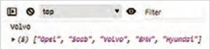
چنانچه اندیس عنصر آرایه مشخص نشود، کل عناصر آرایه روی صفحه چاپ میشود.
نکته
با تعریف آرایه توسط کلمه کلیدی const امکان تغییر عناصر آرایه موجود است؛ اما متغیر آرایه نمیتواند به آرایه دیگری نسبت داده شود. بهعنوان مثال نوشتن عبارت زیر با خطا مواجه میشود:
]"cars = ["Tara", "Shahin", "Dena"," Lamari Eama
صفحه ۲۰۷
ایجاد آرایه و چاپ مقادیر
کار کارگاهی
1 فایل جدیدی با نام workshop4.html ایجاد کنید و درون آن آرایهای با نام colors با مقادیر yellow، blue، red، green و orange تعریف کنید. بعد از بررسی صحت برنامه، دستورات را در جاهای خالی بنویسید.
2 دستوری بنویسید که عنصر blue را در کنسول مرورگر نمایش دهد.
……………………………
3 دستوری بنویسید که تمام عناصر آرایه colors را به یک باره چاپ نماید.
……………………………
بیشتر بدانید
آرایههای چندبعدی در بخش قبل نحوۀ ایجاد یک آرایۀ تکبعدی و دسترسی به عناصر آن معرفی شد. جاوااسکریپت امکان تعریف آرایه چندبعدی را نیز فراهم میکند. آرایه چند بعدی زمانی ایجاد میشود که هر یک عناصر آرایه محتوای آرایه دیگری باشند. رایجترین نوع آرایه چندبعدی، آرایه دو بعدی است که میتواند به عنوان ماتریس استفاده شود.
در مثال زیر یک آرایۀ دو بعدی با نام users تعریف شده است:
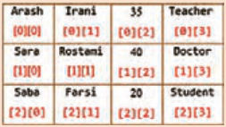
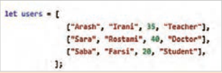
برای دسترسی به عنصر اول آرایۀ اول (Arash) باید از عبارت ]users[0][0 استفاده شود و برای دسترسی به عنصر چهارم آرایۀ دوم (Doctor) از عبارت ].users[1][3 تصویر سمت راست، اندیس عناصر آرایۀ دوبعدی users را نمایش میدهد.
کار با آرایههای دو بعدی در فایل workshop4.html محتوای آرایۀ users (مثال قبل) را بنویسید.
1 دستورات زیر را بعد از معرفی آرایه وارد کنید و خروجی هریک از دستورات را در کنسول مرورگر بررسی کنید. نتیجه را مقابل هر دستور یادداشت کنید.
……………………………………… ;(users)console.log ……………………………………… ;)]users[1(console.log ……………………………………… ;)]users[2][3(console.log
2 دستوری بنویسید که باعث نمایش عنصر Rose شود.
………………………………….
صفحه ۲۰۸
اشیا در جاوااسکریپت شیء (Object) یک ساختار داده است که برای ذخیرۀ مجموعهای از دادههای مرتبط، بهصورت جفتهای کلید: مقدار استفاده میشود، در ساختار داده شیء، مجموعهای از کلیدها (keys) به مقادیر (values) متناظر خود اشاره میکنند. اشیا برای ذخیره و سازماندهی دادهها و رفتارهای یک موجودیت استفاده میشوند. که ساختاری شبیه به دیکشنری در پاتیون دارد.
مثال
در مثال زیر شیء person دارای چهار ویژگی نام، نام خانوادگی، سن و رنگ چشم است که هر یک دارای مقدار مشخصی هستند:
در هنگام تعریف یک شیء استفاده از فواصل و ایجاد سطر جدید اهمیتی ندارد؛ بنابراین شیء person میتواند بهصورت زیر نیز تعریف شود:
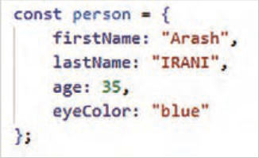
دسترسی به مقدار ویژگیهای یک شیء از طریق علامت نقطه یا کروشه امکانپذیر است. هر دو دستور زیر مقدار ویژگی firstName در شیء person را نمایش میدهد:
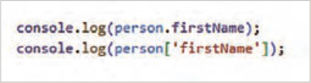
بیشتر بدانید
یک شیء علاوه بر ویژگیها دارای رفتارهایی است که با عنوان متد تعریف میشوند. تعریف متدها معموًلا در انتهای جفتهای کلید-مقدار شیء انجام میشود.
روش جدید
روش قدیم
{)(methodName:function
{)(methodName
دستوراتی که متد انجام میدهد //
دستوراتی که متد انجام میدهد //
}
}
در خطوط 13 تا 15 کد صفحه بعد متد displayInfo() برای شیء person تعریف شده و در خط 17 فراخوانی آن انجام شده است.
صفحه ۲۰۹
بیشتر بدانید
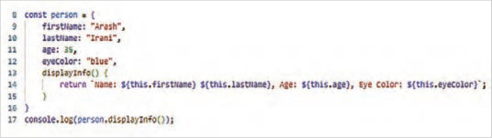
در تعریف فوق، کلمه کلیدی this به شیء جاری (person) اشاره میکند و برای دسترسی به ویژگیهای شیء جاری بهکار میرود. این متد اطلاعات شیء person را به محل فراخوانی برمیگرداند.
برای فراخوانی متد شیء، ابتدا نام شیء (Person) و سپس نام متد(displayInfo) به همراه علائم () نوشته میشود.
رشتهای که توسط متد displayInfo() به محل فراخوانی برگردانده (return) میشود، باید درون علامت backtick قرار گیرد. این علامت در گوشه بالای صفحه کلید، زیر دکمه esc واقع شده است.
ایجاد شیء در جاوااسکریپت
کار کارگاهی
1 فایل جدیدی با نام workshop5.html ایجاد کنید.
2 یک شیء با نام book با ویژگیهای title، author و year و مقادیر "JavaScript"، "Douglas Crockford" و 2008 ایجاد کنید.
……………………………………………………………
3 دستوری بنویسید که مقدار ویژگی author در شیء book را چاپ نماید. ..………………....
بیشتر بدانید
ترکیب اشیا و آرایهها جاوااسکریپت امکان ترکیب اشیا و آرایهها را با هم فراهم میکند. برنامهنویس جاوااسکریپت میتواند آرایهای از اشیا یا یک شیء شامل آرایه را ایجاد نماید.
مثال
مثال زیر آرایهای از اشیا را ایجاد میکند:
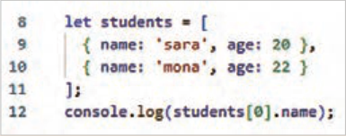
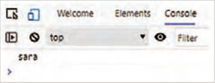
صفحه ۲۱۰
مثال
در مثال زیر شیء school حاوی آرایه students است:
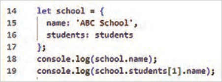
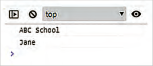
فعالیت
کار با اشیا و آرایهها در فایل workshop5.html آرایه students و school را مطابق مثال فوق تعریف کنید و نتایج را در کنسول مرورگر بررسی کنید دستوری بنویسید که نام و سن خانم mona را در کنسول نمایش دهد.
…………………………………………………
ساختارهای شرطی و حلقه در جاوااسکریپت ساختارهای شرطی و حلقه از اجزای اساسی زبانهای برنامهنویسی، از جمله جاوااسکریپت هستند. ساختارهای شرطی منطق برنامه را بر اساس شرایط خاص کنترل میکنند و ساختارهای حلقه عملیات خاصی را بهصورت تکراری انجام میدهند. این بخش به معرفی این ساختارها میپردازد.
دستورات شرطی If یک دستور شرطی امکان اجرای مجموعهای از دستورات را به ازای برقراری یک شرط خاص فراهم میکند.
بسته به نیاز برنامه، دستور if میتواند به سه صورت نوشته شود. جدول 20 شکل کلی ساختار شرطی if را در سه حالت مختلف نمایش میدهد.
جدول 20 انواع ساختارهای شرطی if
else-if
ifif-else ساده
{ (condition1) if
statement1
{(condition) if
{(condition) if
{ (condition2) else if }
Statement1
statements
statement2
{else}
}
{ else }
Statement2
statement3
}
}
Page 206
Arrays (Arrays) Array variables can hold several elements with different data types. When you define a variable of array type, the array values are written inside square brackets. An array can have elements of the same data type or of different types.
Example
In the following example, three arrays with string, numeric, and mixed values are defined:
;]"let cars = ["Opel", "Saab", "Volvo", "BMW", "Hyundai
;]let numbers = [1, 20 , 5 , 25 , 1000 , 10 , 1 , 5
;]let data = [123, "Opel", false , 12 , 35
Each of the array elements has an index. Array element indexes start at zero, so if an array has 5 elements, the index of the first element is zero and the index of the last element is 4. To access array elements, the element indexes are used. The figure below shows a view of the elements of the cars array and their values:
Volvo
Saab
OpelElement values
BMW
0Element indexes
4
3
2
1
Figure 9
To access the first element of the array, the expression ]cars[0 is used, and to access the fourth element, the expression ]cars[4 is used.
Example
On the second line of the following example, the value of the third element of the cars array is displayed in the console, and on the third line the entire array is displayed.
If the index of an array element is not specified, all elements of the array are printed on the page.
Note
When you define an array with the keyword const, you can still change the elements of the existing array; but the array variable cannot be assigned to another array. For example, writing the following expression causes an error:
]"cars = ["Tara", "Shahin", "Dena"," Lamari Eama
Page 207
Creating an array and printing values
Workshop
1 Create a new file named workshop4.html and inside it define an array named colors with the values yellow, blue, red, green, and orange. After checking that the program is correct, write the statements in the blanks.
2 Write a statement that displays the element blue in the browser console.
……………………………
3 Write a statement that prints all elements of the colors array at once.
……………………………
Learn more
Multidimensional arrays In the previous section, how to create a one-dimensional array and access its elements was introduced. JavaScript also makes it possible to define a multidimensional array. A multidimensional array is created when each of the array’s elements contains another array. The most common type of multidimensional array is a two-dimensional array, which can be used as a matrix.
In the following example, a two-dimensional array named users is defined:
To access the first element of the first array (Arash), the expression ]users[0][0 must be used, and to access the fourth element of the second array (Doctor), the expression ].users[1][3 The image on the right shows the indexes of the elements of the two-dimensional array users.
Working with two-dimensional arrays In the workshop4.html file, write the contents of the users array (the previous example).
1 Enter the following statements after introducing the array and check the output of each statement in the browser console. Note the result next to each statement.
……………………………………… ;(users)console.log ……………………………………… ;)]users[1(console.log ……………………………………… ;)]users[2][3(console.log
2 Write a statement that causes the element Rose to be displayed.
………………………………….
Page 208
Objects in JavaScript An object (Object) is a data structure used to store a set of related data as key: value pairs; in an object data structure, a set of keys (keys) point to their corresponding values (values). Objects are used to store and organize the data and behaviors of an entity. which has a structure similar to a dictionary in Python.
Example
In the following example, the object person has four properties—first name, last name, age, and eye color—each of which has a specific value:
When defining an object, using spaces and creating a new line does not matter; therefore the object person can also be defined as follows:
Accessing the value of an object’s properties is possible with a dot or with square brackets. Both of the following statements display the value of the firstName property in the object person:
Learn more
In addition to properties, an object has behaviors that are defined as methods. Methods are usually defined at the end of the object’s key-value pairs.
New method
Old method
{)(methodName:function
{)(methodName
// Statements that the method performs
// Statements that the method performs
}
}
On lines 13 through 15 of the code on the next page, the method displayInfo() is defined for the object person, and on line 17 it is called.
Page 209
Learn more
In the definition above, the keyword this refers to the current object (person) and is used to access the properties of the current object. This method returns the information of the object person to the place where it is called.
To call an object’s method, first the object name (Person) and then the method name (displayInfo) are written together with the () marks.
The string that the method displayInfo() returns (return) to the place where it is called must be placed inside a backtick mark. This mark is at the top corner of the keyboard, below the esc key.
Creating an object in JavaScript
Workshop
1 Create a new file named workshop5.html.
2 Create an object named book with the properties title, author, and year and the values "JavaScript", "Douglas Crockford", and 2008.
……………………………………………………………
3 Write a statement that prints the value of the author property in the object book. ..………………....
Learn more
Combining objects and arrays JavaScript makes it possible to combine objects and arrays. A JavaScript programmer can create an array of objects or an object that contains an array.
Example
The following example creates an array of objects:
Page 210
Example
In the following example, the object school contains the array students:
Activity
Working with objects and arrays In the workshop5.html file, define the array students and school according to the example above and check the results in the browser console. Write a statement that displays Ms. mona’s name and age in the console.
…………………………………………………
Conditional and loop structures in JavaScript Conditional and loop structures are essential parts of programming languages, including JavaScript. Conditional structures control the program’s logic based on specific conditions, and loop structures perform particular operations repeatedly. This section introduces these structures.
Conditional If statements A conditional statement makes it possible to run a set of statements when a particular condition is met.
Depending on what the program needs, the if statement can be written in three forms. Table 20 shows the general form of the if conditional structure in three different cases.
Table 20 Types of if conditional structures
else-if
ifif-else ساده
{ (condition1) if
statement1
{(condition) if
{(condition) if
{ (condition2) else if }
Statement1
statements
statement2
{else}
}
{ else }
Statement2
statement3
}
}